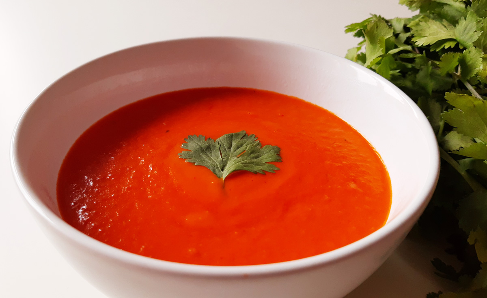

Domácí rajská polévka

Ingredience
- 1 kg zralých rajčat (nebo 2 plechovky)
- 1 cibule
- 2 stroužky česneku
- 750 ml vývaru
- Čerstvá bazalka
- Olivový olej, sůl, cukr
Postup přípravy
- Základ: Na olivovém oleji zpěňte nakrájenou cibuli a česnek.
- Rajčata: Přidejte nakrájená rajčata a chvíli restujte.
- Vaření: Zalijte vývarem a vařte asi 20 minut, dokud rajčata nezměknou.
- Mixování: Polévku rozmixujte dohladka tyčovým mixérem.
- Dochucení: Dochuťte solí, pepřem a trochou cukru. Podávejte s bazalkou.